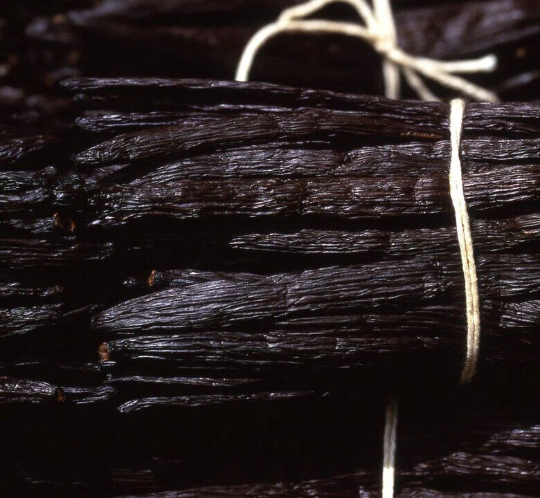
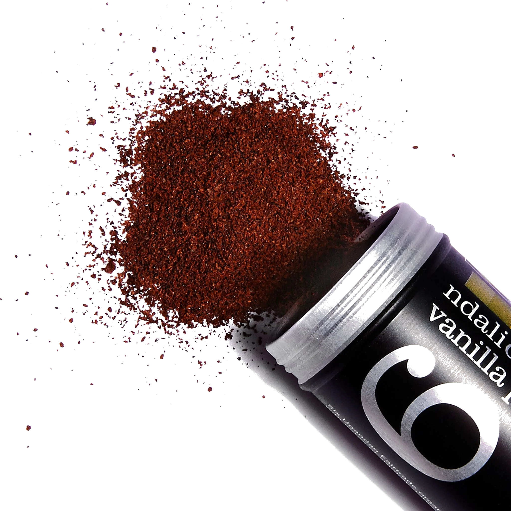
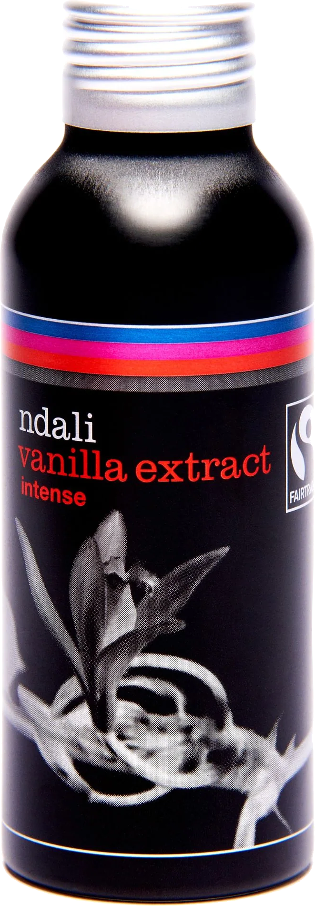
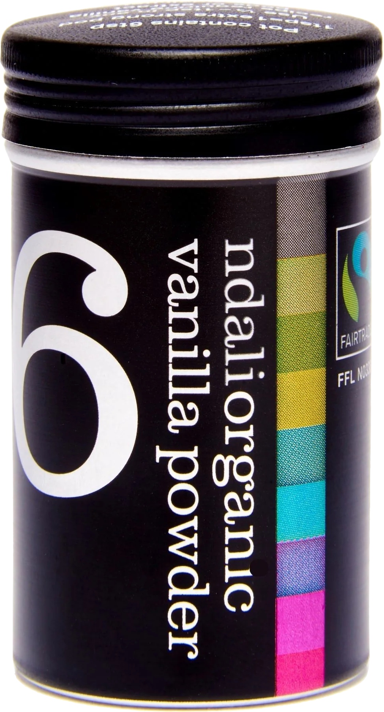
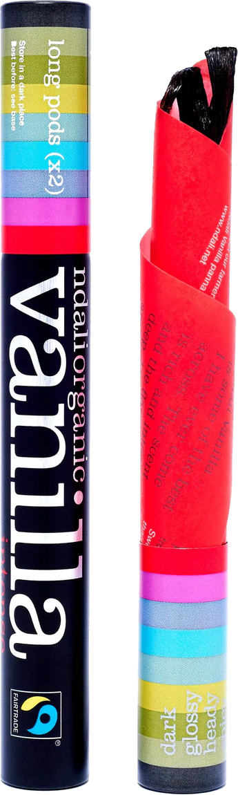

Sturdy Vanilla
Grown by my aunt in Uganda.
Ndali vanilla, from my family's estate. My aunt grows and cures it. I sell it direct to home cooks.
The soil said no to tea.
My great-grandfather bought Ndali in the early sixties to grow tea. The soil was too alkaline, and the land sat wild for about thirty years. In 1998 my aunt, Lulu Sturdy, took it on. She tried pyrethrum, chillies, rice and coffee before she landed on vanilla, and the first pods were cured on the estate in 1999.
Nine hundred of the estate's thousand acres are forest again. The vanilla grows underneath it.
Ndali is my aunt's business and sells to the trade. Sturdy Vanilla is mine: the same vanilla, sold direct to home cooks.

What the premium actually bought.
In 2005 the Rwenzori Vanilla Farmers became the first Fairtrade vanilla organisation in Africa. Around 2,000 farming families sell into it.
The premium has paid for 9 acres of land, a pharmacy, a school roofing project, a maize mill, beekeeping projects, educational scholarships and grants for medical operations.
Vanilla is an orchid, and it will not pollinate itself.
Every flower is opened by hand with a pin or a whittled stick, within 8 hours of it opening, or it sets nothing. There is no machine for this anywhere in the world.
The pod then stays on the vine for nine to eleven months. It is the second most expensive spice on earth after saffron, and the hand work is why. A Ndali pod weighs 7.5g. A supermarket pod weighs 2 to 3g.

Three forms of one thing.
Pods, extract and powder, all from the same estate, all cured and milled on the farm. Nothing is shipped out green to be processed somewhere else. 100% vanilla, organic, Fairtrade, single estate.
-
Intense Ndali vanilla extract, 100ml. Made on the farm. £13.99
-
Ndali vanilla powder, 13g. One tin is six pods. £10.99
-
Two intense Ndali pods, 7.5g each. £9.99
Every tin is recyclable aluminium. Shop on TikTok.



Pods, extract and powder.
Chapter five
The school
In January 2017 a school opened on the estate.
93 children, aged three to ten, from the poorest families in the district.
Montessori and Cambridge, and yoga every day. My aunt co-founded it with Clare Murumba Price. It is the only school of its kind in East Africa.
The vanilla is what pays for it. The tin you buy is part of that.
Sadhguru School, Fort Portal. Not-for-profit.
Sturdy Vanilla
Sturdy Vanilla presents Ndali pods, extract and powder, grown by my aunt in Uganda.
Everything is on TikTok Shop. 2 Intense Ndali Vanilla Pods, £9.99. 13g Ndali Vanilla Powder, £10.99. 100ml Ndali Vanilla Extract, £13.99. All in recyclable aluminium.